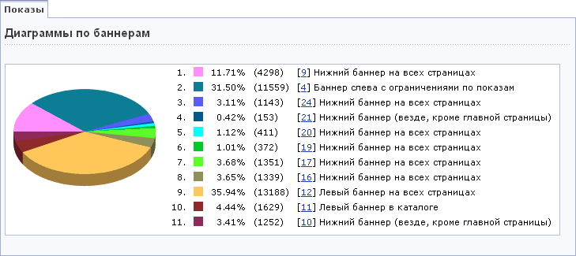
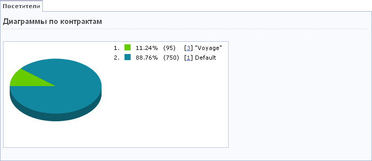

Система "1С-Битрикс: Управление сайтом" позволяет представить результаты проведения рекламных компаний в виде диаграмм. Построение диаграмм выполняется в соответствующих разделах модуля Реклама:
Диаграммы позволяют наглядно сравнить количество посетителей, просмотревших различную рекламу, количество показов и кликов, а также индекс отклика на рекламу (CTR). Период времени, в течение которого выполняется хранение данных, используемых для построения диаграмм, определяется в настройках модуля Реклама.
Отбор данных, на основе которых будет выполнено построение диаграммы.
| Параметр | Описание |
|---|---|
| Период | Период времени, данные за который будут использованы при построении диаграммы. Если значение поля не указано, то для построения диаграммы будут использованы данные за весь доступный период. |
| *Что показывать |
|
| *Баннеры | Выбор баннеров, данные по которым необходимо отобразить на диаграмме. Для построения диаграммы необходимо выбрать хотя бы два баннера в списке. |
| Группы | Выбор групп, данные по которым необходимо отобразить на диаграмме. Для построения диаграммы необходимо выбрать хотя бы две группы в списке. |
* Обязательные параметры.
Чтобы построить диаграмму на основе выбранных параметров, нажмите кнопку Найти. Для сброса значений параметров нажмите кнопку Отменить.

Выбор данных, на основе которых будет выполнено построение графика.
| Параметр | Описание |
|---|---|
| Период | Период времени, данные за который будут использованы при построении диаграммы. Если значение поля не указано, то для построения диаграммы будут использованы данные за весь доступный период. |
| *Что показывать |
|
| *Контракты | Выберите контракты, данные по которым должны быть отображены на диаграмме. |
* Обязательные параметры.
Чтобы построить график на основе выбранных параметров, нажмите кнопку Найти. Для сброса значений параметров нажмите кнопку Отменить.

Примечание. Если баннеры отсутствуют, то диаграммы не выводятся.
| © «Битрикс», 2001-2008, «1C-Битрикс», 2008 | 1С-Битрикс: Управление сайтом |